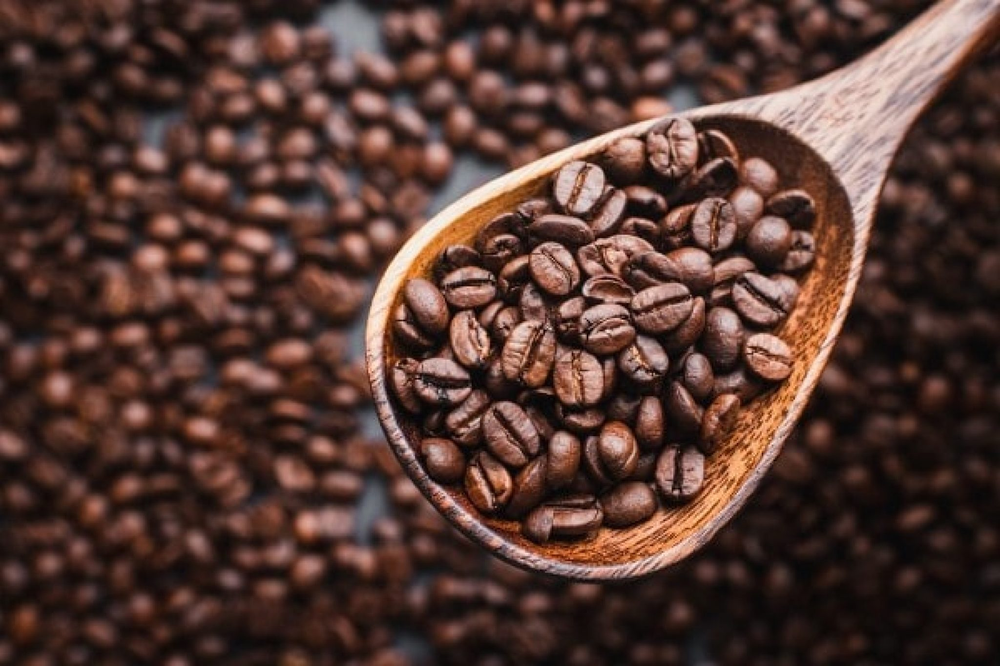

¿Qué es el café artesanal?
El café artesanal se cultiva y procesa con métodos tradicionales, lo que permite conservar su sabor auténtico, aroma intenso y calidad superior. Proviene de pequeñas fincas donde se respeta el proceso natural del grano.
Beneficios del café artesanal
- Mayor riqueza de sabor
- Menor impacto ambiental
- Apoyo a pequeños productores
- Sin aditivos químicos